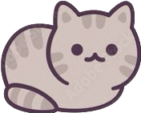

DỊCH VỤ CẮT TỈA THÚ CƯNG


NÊN CẮT TỈA LÔNG CHO PET?
Thường thì những chú chó lông dài sẽ nhanh bị bết lông hoặc khi chơi đùa dễ bị các vết bẩn bám sâu vào trong. Điều này khiến việc làm sạch cho chúng trở nên khó khăn hơn. Thực tế, việc cắt tỉa lông cho chó không chỉ cần thiết vào mùa hè, mà còn cả những mùa khác. Đối với những giống chó lông dài thì việc chăm sóc lông và cắt tỉa đóng vai trò quan trọng trong việc chăm sóc cún.


KHI CẮT TỈA LÔNG CHO PET
Để dễ dàng cắt tỉa thì bạn phải thường xuyên dùng lược chải lông cho pet để lông của chúng được mượt và sạch hơn. Sau khi cắt lông nhớ vệ sinh tai cho cún và quan sát và đảm bảo cắt lông đều, tránh chỗ dài chỗ ngắn gây mất thẩm mỹ. Bạn cũng cần phải rất cẩn thận để pet không bị thương khi cắt tỉa lông nhé. Để có độ thẫm mỹ cao, bạn có thể sử dụng dịch vụ cắt tỉa lông chuyên nghiệp tại PetCare nhé.
BẢNG GIÁ DỊCH VỤ SPA TẠI

PETCARE


Chính sách bảo vệ sức khỏe thú cưng là một trong những ưu tiên hàng đầu của chúng tôi tại cửa hàng chăm sóc thú cưng.
Chúng tôi xác định rằng để đảm bảo sức khỏe và sự an toàn cho thú cưng, các chủ nuôi cần phải thực hiện đầy đủ các biện pháp vệ sinh và tiêm ngừa định kỳ cho thú cưng của mình. Vì vậy, chúng tôi khuyến khích và yêu cầu tất cả các khách hàng khi sử dụng các dịch vụ chăm sóc thú cưng của chúng tôi, bao gồm cả lưu trú, phải đảm bảo thú cưng đã được tiêm ngừa mới nhất và đáp ứng các tiêu chuẩn vệ sinh cần thiết. Điều này không chỉ đảm bảo sức khỏe cho thú cưng của bạn, mà còn đảm bảo sức khỏe cho tất cả các thú cưng khác trong khu vực.
Chúng tôi cam kết tuân thủ nghiêm ngặt các quy định và tiêu chuẩn vệ sinh cần thiết để đảm bảo môi trường sống sạch sẽ, an toàn và thoải mái cho thú cưng của bạn.
PET CARE luôn đặt chất lượng dịch vụ lên hàng đầu để đáp ứng được yêu cầu khách hàng ngày càng cao.
Nhân viên được tuyển chọn kỹ càng và đào tạo bài bản, đảm bảo có đầy đủ kỹ năng và tinh thần trách nhiệm để phục vụ khách hàng tốt nhất. Chúng tôi cũng thường xuyên cập nhật kiến thức và kỹ năng mới cho nhân viên để đáp ứng được nhu cầu khách hàng ngày càng đa dạng.
Về trang thiết bị, PET CARE đầu tư mạnh vào các thiết bị hiện đại và đầy đủ chức năng để hỗ trợ các dịch vụ của chúng tôi. Chúng tôi đảm bảo mọi trang thiết bị được kiểm tra kỹ lưỡng trước khi sử dụng để đảm bảo an toàn và hiệu quả trong việc phục vụ khách hàng.
1. Kiểm tra tình trạng sức khỏe của thú cưng: trước khi bắt đầu cắt tỉa lông, nhân viên chăm sóc thú cưng cần kiểm tra tình trạng sức khỏe của thú cưng để đảm bảo rằng chúng đủ khỏe mạnh để trải qua quá trình cắt tỉa.
2. Tư vấn về kiểu cắt tỉa lông phù hợp: sau khi kiểm tra sức khỏe, nhân viên chăm sóc thú cưng sẽ tư vấn cho chủ thú cưng về các kiểu cắt tỉa lông phù hợp với loại thú cưng của họ.
3. Tắm gội và làm sạch lông: trước khi cắt tỉa lông, thú cưng cần được tắm gội và làm sạch lông để giúp cho quá trình cắt tỉa dễ dàng hơn.
4. Cắt tỉa lông: sau khi lông đã được làm sạch và khô, nhân viên chăm sóc thú cưng sẽ bắt đầu quá trình cắt tỉa lông theo kiểu mà chủ thú cưng đã chọn.
5. Tạo kiểu cho lông: sau khi cắt tỉa xong, nhân viên sẽ tiến hành tạo kiểu cho lông của thú cưng bằng cách sử dụng các sản phẩm chăm sóc lông như sáp hoặc gel.
6. Vệ sinh lại: cuối cùng, nhân viên sẽ kiểm tra và vệ sinh lại cho thú cưng trước khi trả lại cho chủ của nó.
Kiểu cắt Bichon: Thường dành cho các giống chó có lông dài và xoăn, kiểu cắt này sẽ tạo cho thú cưng một bộ lông mềm mại, xoăn tự nhiên, tạo cảm giác đáng yêu và tinh nghịch.
Kiểu cắt Puppy: Kiểu cắt này thường được sử dụng cho các chú chó con, tạo cho thú cưng một bộ lông ngắn và gọn gàng, tạo nên vẻ đáng yêu, dễ thương cho thú cưng.
Kiểu cắt Lion: Kiểu cắt này tạo cho thú cưng bộ lông giống như bộ lông của sư tử, lông ở đầu gọn hơn, lông ở thân dài hơn, tạo nên sự khỏe khoắn, mạnh mẽ cho thú cưng.
Kiểu cắt Teddy Bear: Kiểu cắt này sử dụng cho thú cưng có bộ lông xoăn dài, tạo ra sự bồng bềnh, dễ thương cho thú cưng.
Kiểu cắt Schnauzer: Kiểu cắt này dành cho các giống chó có bộ lông tơi xù, tạo nên sự gọn gàng, lịch sự, phù hợp với các chú chó ở nhà.
| PET |
CUNG CẤP CÁC DỊCH VỤ THÚ CƯNG ĐƯỢC YÊU THÍCH NHẤT VIỆT NAM |
| CARE |